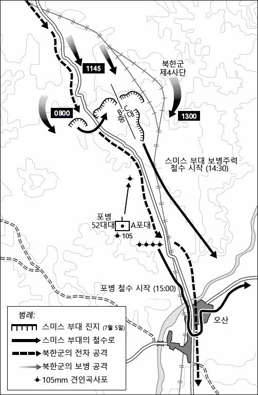

북한군 전차를 향해 바주카포를 조준하는 미군
1950년 7월 15일 미군의 최초 참전부대 스미스 부대가 오산 죽미령에서 북한군을 방어한 전투로
북한군이 엄청난 기세로 남하를 하자 미군은 본대가 정비 하기전 선발부대인 스미스 특수임부대를 조직합니다.
스미스 부대란 미 육군 제 8군 24보병사단 26연대 1개 대대로 당시 대대장인 찰스 스미스 중령의 이름을 따서
조직된 부대입니다.
이들은 2개 중대로 406명의 장병들이 부산 시민들의 환영을 받고
6월 30일 부산으로 도착합니다. 이들은 부대를 이동하며 오산 북방 죽미령까지 지형정찰을 실시하였고 평택과 안성에
각각 1개 중대씩 배치하고 지휘소는 평택에 설치합니다. 이후 두 번째로 34연대가 한국에 도착하였고 이들은 7월 5일 평택
및 안성에 각각 1개 대대씩 배치가 됩니다. 그렇게 이들은 방어진지를 구축하여 북한군이 오기를 기다리고 있게 됩니다.

오산 전투 지도
7월 3일 북한군은 한강전선을 뚫고 남하하기 시작하였습니다. 이들은 오산 북쪽으로 부터 서서히 진격하기 시작했으며 7월 5일 오산 북쪽 죽미령에서 미군은 북한군과 첫 교전을 하게 됩니다. 전투가 시작하기 전 스미스 부대는 중대를 나누어 고지대에서 방어진지를 구축하였고 각 중대당 75mm 무반동총 1정씩 배치하고 4.2인치 박격포를 후방에 배치하였습니다. 또한 진지로 부터 2000야드 떨어진 후방에는 5문의 포를 배치하여 북한군이 오기만을 기다렸습니다. 1950년 7월 5일 07:00시 수원 가까이서 북한군이 움직이기를 시작하였는데 08:00시경 북한군은 소련제 t-34전차를 선두로 내세워 진격을 시작합니다. 전차를 무력화 시키기 위해 포격지원을 실시한 스미스 부대였으나 제대로된 타격을 주지 못하였습니다. 1,600m ~ 1,700m 거리에서 포를 발사하여 북한군 전차를 저지하려 했으나 결국 무용지물 이였고 북한군은 이기세를 몰아 스미스 부대를 포위하기 시작하였습니다. 포위를 당한 스미스 부대는 전선이 붕괴되었고 물자와 탄약이 바닥이 나게 됩니다. 사망자와 부상자가 계속해서 발생하고 이들의 사기는 바닥이 납니다.
수많은 사상자가 발생한 스미스 부대는 540명중 150명이 전사하고 포병대 소속 장교 5명과 병 26명은 실종이 되는 결과를 맞이하게됩니다. 여기에 북한군은 42명의 전사자와 85명의 부상자,
전차 4대를 손실하게 됩니다. 스미스 부대의 결정적인 패배로 미군이 전선에 투입하는 것 만으로도 북한군이 공포에 떨며 돌아갈 것이라는 미군의 예상은 완전 산산조각 나게 됩니다.
스미스 부대는 극심한 기상악화로 공중지원도 없이 전투를 치뤘고 수적 열세에 의해서 전투에 패배하게 됩니다. 하지만 전선을 가다듬은 쓰라린 패배를 교훈으로 전선을 재정비하여 반격의 기회를
노리게 됩니다. 본대로 복귀한 스미스 부대는 훗날 다른 전선으로 재투입하여 계속해서 전투를 치뤘고 전쟁이 끝난후 이들은 고국으로 떠날 수 있게됩니다.
참고자료
오산전투 운명의 6시간 - 미국 지상군과 북한군 최초의 전투기록 [밀덕실험] KBS 2017 06 25 방송